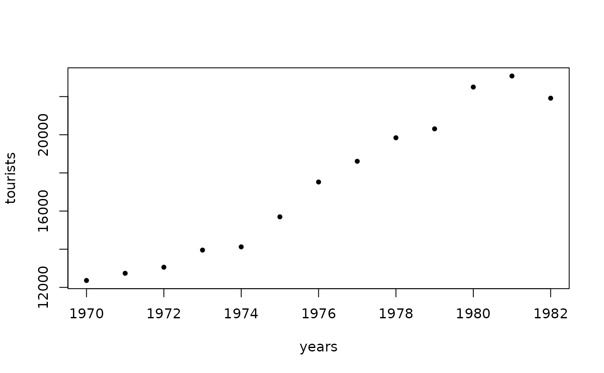

BartelsRankTest.RdPerforms the Bartels rank test of randomness, which tests if a sample is sampled randomly from an underlying population. Data must at least be measured on an ordinal scale.
a numeric vector containing the observations
a character string specifying the alternative hypothesis, must be one of "two.sided" (default), "trend" or "oscillation".
a character string specifying the method used to compute the p-value. Must be one of normal (default), beta or auto.
The RVN test statistic is $$RVN=\frac{\sum_{i=1}^{n-1}(R_i-R_{i+1})^2}{\sum_{i=1}^{n}\left(R_i-(n+1)/2\right)^2}$$ where \(R_i=rank(X_i), i=1,\dots, n\). It is known that \((RVN-2)/\sigma\) is asymptotically standard normal, where \(\sigma^2=\frac{4(n-2)(5n^2-2n-9)}{5n(n+1)(n-1)^2}\).
By using the alternative "trend" the null hypothesis of randomness is tested against a trend. By using the alternative "oscillation" the null hypothesis of randomness is tested against a systematic oscillation.
Missing values are silently removed.
Bartels test is a rank version of von Neumann's test.
A list with class "htest" containing the components:
the value of the normalized statistic test.
the size of the data, after the remotion of consecutive duplicate values.
the p-value of the test.
a character string describing the alternative hypothesis.
a character string indicating the test performed.
a character string giving the name of the data.
the value of the RVN statistic (not show on screen).
the value of the NM statistic, the numerator of RVN (not show on screen).
the mean value of the RVN statistic (not show on screen).
the variance of the RVN statistic (not show on screen).
Bartels, R. (1982) The Rank Version of von Neumann's Ratio Test for Randomness, Journal of the American Statistical Association, 77 (377), 40-46.
Gibbons, J.D. and Chakraborti, S. (2003) Nonparametric Statistical Inference, 4th ed. (pp. 97-98). URL: http://books.google.pt/books?id=dPhtioXwI9cC&lpg=PA97&ots=ZGaQCmuEUq
von Neumann, J. (1941) Distribution of the ratio of the mean square successive difference to the variance. Annals of Mathematical Statistics 12, 367-395.
rank.test, RunsTest
## Example 5.1 in Gibbons and Chakraborti (2003), p.98.
## Annual data on total number of tourists to the United States for 1970-1982.
years <- 1970:1982
tourists <- c(12362, 12739, 13057, 13955, 14123, 15698, 17523, 18610, 19842,
20310, 22500, 23080, 21916)
plot(years, tourists, pch=20)

BartelsRankTest(tourists, alternative="trend", method="beta")
#>
#> Bartels Ratio Test
#>
#> data: tourists
#> RVN = 0.098901, z = -3.645338, n = 13, p-value = 0.0000000121
#> alternative hypothesis: trend
#>
# Bartels Ratio Test
#
# data: tourists
# statistic = -3.6453, n = 13, p-value = 1.21e-08
# alternative hypothesis: trend
## Example in Bartels (1982).
## Changes in stock levels for 1968-1969 to 1977-1978 (in $A million), deflated by the
## Australian gross domestic product (GDP) price index (base 1966-1967).
x <- c(528, 348, 264, -20, - 167, 575, 410, -4, 430, - 122)
BartelsRankTest(x, method="beta")
#>
#> Bartels Ratio Test
#>
#> data: x
#> RVN = 2.048485, z = 0.083357, n = 10, p-value = 0.9379
#> alternative hypothesis: nonrandomness
#>